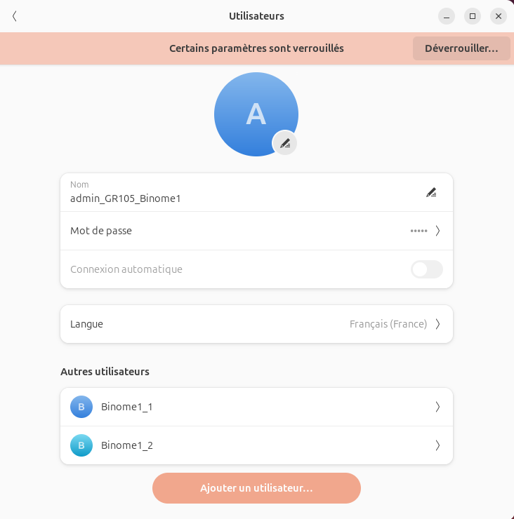
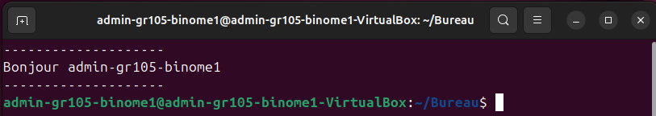

Gestion des comptes, sécurité et services Web
Création des comptes Binome1_1 et Binome1_2 via les paramètres système.
Justification : L'interface graphique permet une configuration fiable des comptes. En les définissant comme "Standards", on applique le principe du moindre privilège : les utilisateurs peuvent travailler sans risque de modifier accidentellement les fichiers système sensibles.

Paramétrage des comptes via l'interface GUI
Conformément aux consignes, nous avons créé un administrateur et des utilisateurs restreints.
Séparation stricte : seul le compte admin-gr105-binome1 possède les droits sudo. Les comptes binome1_1 et binome1_2 sont des utilisateurs standards. Cela applique le principe du moindre privilège, empêchant la suppression accidentelle de services critiques[cite: 1327, 1329].
Modification persistante du fichier .bashrc.
admin-gr105-binome1@admin-gr105-binome1-VirtualBox:~$
_
Nous avons utilisé la commande echo pour afficher des informations directement dans le terminal.
echo permet de s'assurer que l'utilisateur est bien positionné sur le bon compte avant d'entamer des configurations critiques.echo avec nos noms permet de marquer la session de travail sur la capture d'écran, prouvant ainsi l'authenticité de la manipulation.Méthode : Utilisation de la sortie standard pour confirmer l'identité du binôme.

Affichage de contrôle dans le terminal
Afficher l'identité complète permet de ne pas se tromper de machine ou de compte lors de l'utilisation de plusieurs terminaux ou connexions SSH[cite: 1220, 1221].
Installation via sudo apt install apache2 après mise à jour des dépôts.
Nous avons exécuté sudo apt update et upgrade avant l'installation. Cela garantit que le service n'est pas déployé sur un noyau vulnérable[cite: 1373].
Apache gère les fichiers .htaccess, permettant de sécuriser des dossiers spécifiques sans redémarrer le service complet. C'est idéal pour notre environnement de développement[cite: 1456].
Prêt à voir l'organisation temporelle ?
Voir le Diagramme de Gantt